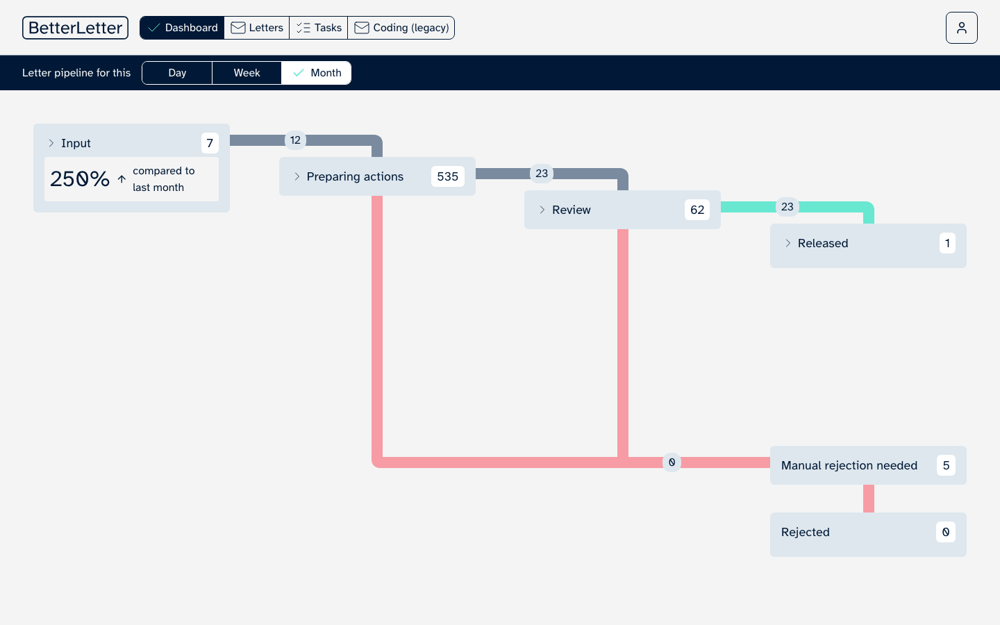
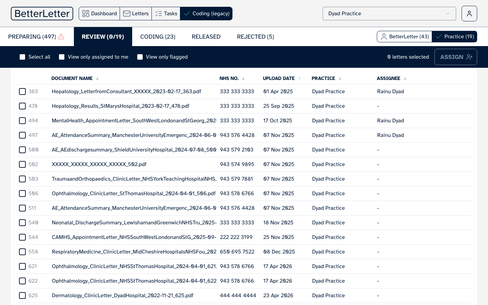
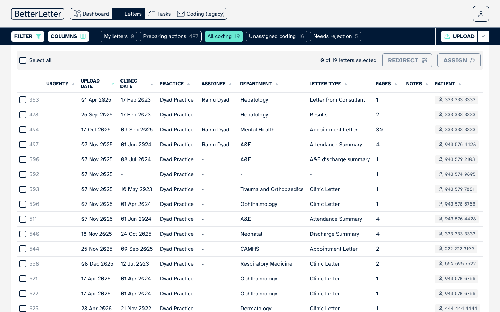

The old workflow tabs did two jobs - an overview and a working queue. Those are now two separate screens. Drag each slider to compare old (left) with new (right).


Before AfterDrag the handle, or click the frame, to compare. Focus it and use the arrow keys to move it one step at a time.

Before AfterDrag the handle, or click the frame, to compare. Focus it and use the arrow keys to move it one step at a time.